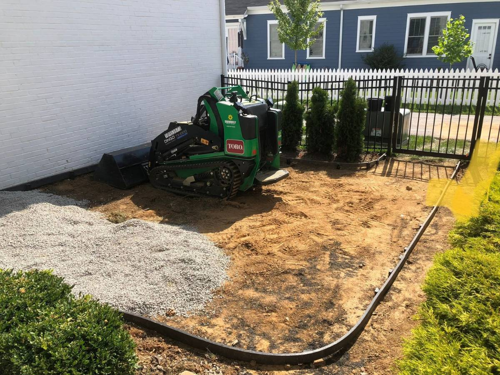
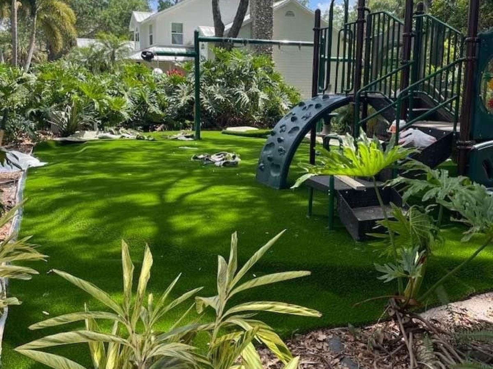

Choosing the right artificial turf can completely change the look, comfort, and functionality of a yard. With so many fibers, infills, pile heights, and durability ratings available, the best choice depends on lifestyle, climate, intended use, and budget. Consider factors such as pet-friendliness, sun exposure, and drainage needs, which can significantly affect performance and longevity. This guide shares practical insights, real examples, and expert recommendations to help homeowners pick the right turf for EternaTurf Sarasota for long-term use, low maintenance, and beautiful curb appeal.
Why Turf Is More Popular Than Ever
Adoption has rapidly grown across the U.S., especially in states with rising water costs and stricter lawn maintenance regulations. A 2024 landscaping report noted that residential synthetic turf installations increased by over 18% nationwide, driven by homeowners seeking lower maintenance, long-lasting curb appeal, and eco-friendly alternatives.
Artificial turf delivers:
- Consistent green appearance all year round, regardless of weather conditions
- Reduced watering cost, helping homeowners save hundreds of dollars annually
- Minimal upkeep, eliminating mowing, fertilizing, and reseeding
- Durable surfaces for pets and children, providing safe and resilient play areas
- Resistance to pests and weeds, reducing the need for chemical treatments
Homeowners in regions with warm climates, such as Florida and Kentucky, often choose turf because it handles sunlight, heavy foot traffic, and moisture better than many natural grass varieties. Additionally, modern turf innovations like heat resistant fibers and high-drainage backing make turf more comfortable and functional than ever, even in intense sun or rainy conditions.
Understanding the Different Types of Artificial Turf
Not all turf is created equally. Choosing the right type begins with understanding the three primary components: fiber type, pile height, and infill. Each of these factors significantly influences performance, comfort, durability, and long-term appearance.
1. Fiber Type
Turf typically uses one of three main fiber materials: polyethylene (PE), polypropylene (PP), or nylon. Polyethylene (PE) is soft to the touch and has a natural feel, making it ideal for residential lawns. It is UV-resistant, retains color over time, and stands up well to foot traffic, making it a popular choice for backyard installations where comfort and aesthetic appeal are priorities.
2. Pile Height
Pile height refers to the length of the turf blades, which affects both comfort and appearance. Shorter pile heights, around 1.0 to 1.25 inches, are ideal for pet-friendly yards or areas with heavy foot traffic because they are easier to clean and maintain. A medium pile height of approximately 1.5 inches works well for most residential lawns, striking a balance between a natural look and practicality.
3. Turf Backing and Drainage
The backing of turf plays a critical role in stability and longevity. The primary backing secures the fibers in place, while the secondary backing, often made of latex or polyurethane, provides additional strength and resilience.
4. Infill Options
Infill supports the turf blades, improves cushioning, and affects overall comfort. Several types of infill are commonly used. Silica sand is an affordable option that provides firmness, while Envirofill, a coated sand with antimicrobial properties, helps keep the turf hygienic. Zeolite infill is particularly popular for pet-friendly yards because it controls odors and supports drainage.

Matching Artificial Turf to Your Yard’s Needs
Every yard has a unique purpose, and selecting the right turf depends on how the space will be used. Different situations require different features, from softness and safety to durability and aesthetics. Below are four common scenarios homeowners consider when searching for turf installers.
1. Turf for Families With Kids
Children need safe, cushioned surfaces that can withstand active play while protecting them from falls. Key features to look for include:
- Fall-protection padding for added safety on hard surfaces
- Soft polyethylene fibers that feel comfortable underfoot
- Heat-resistant turf to prevent burns during hot summer days
- Non-toxic materials without PFAS to ensure safe outdoor play
For most yards, a mid-height pile with additional padding provides a balance of comfort and durability, allowing kids to run, jump, and play safely. Adding a soft base layer beneath the turf can further absorb impact and create a more cushioned play area.
2. Turf for Pet-Friendly Homes
Pets require surfaces that are durable, hygienic, and easy to clean. The right turf features can significantly reduce odor and improve drainage:
- High-drainage backing to prevent pooling and keep surfaces dry
- Antimicrobial infill to reduce bacteria buildup
- Short to mid pile height for easy cleaning and durability
- Double reinforcement stitching for longevity under frequent paw traffic
A practical example comes from a Sarasota homeowner who installed short-pile turf with zeolite infill. Previously, the yard would retain water and odors accumulated quickly. After installation, drainage improved, pet odors were minimized, and the turf maintained a lush, even appearance. Homeowners in regions with high rainfall or humid summers, like Florida and Kentucky, benefit greatly from turf with superior drainage and odor-control features.
3. Turf for Curb Appeal
For yards focused on aesthetics, a rich, natural-looking lawn is the priority. To achieve strong curb appeal, look for these features:
- 1.75–2" pile height for a full, lush appearance
- Multi-tone fibers that closely mimic natural grass
- Slight blade curl to create realism and movement
Tall-pile turf works particularly well in front yards or decorative spaces, where foot traffic is minimal. The combination of realistic color variations and blade structure ensures the lawn remains visually striking throughout the year, even in regions with harsh sunlight or fluctuating weather conditions.
4. Turf for High-Traffic Areas
Entertaining spaces, walkways, or backyard activity zones require turf that can withstand heavy use while maintaining its shape and comfort. Look for the following:
- Nylon or high-density polyethylene fibers for maximum durability
- Reinforced backing to prevent shifting or matting
- Shorter pile height to resist flattening from frequent use
These features allow turf to maintain upright blades and a natural appearance even under repeated foot traffic. In family or community gathering spaces, selecting high-density, durable turf ensures the yard remains functional and attractive year-round.
Choosing the Right Turf Installer
Selecting the right turf installer is just as important as choosing the turf itself. Installation quality directly affects performance, drainage, longevity, and the overall appearance of the lawn. Even the highest-quality turf can fail prematurely if installed incorrectly, leading to uneven surfaces, poor drainage, and reduced lifespan.
When looking for an installer, homeowners should consider:
- Photo examples of local projects to verify experience and quality. Seeing completed yards provides insight into the installer’s craftsmanship, attention to detail, and ability to work in your specific climate.
- Training or certification from turf manufacturers, which ensures the installer is familiar with proper installation techniques, base preparation, and drainage systems. Certified installers are often trained to prevent common issues such as matting or uneven surfaces.
- Clear explanations of base preparation, including grading, compacting, and infill recommendations. A properly prepared base is essential for long-term durability and water management.
- Experience with both residential and pet-friendly applications, as different use cases require different installation techniques, infill selection, and drainage solutions.
Proper installation also ensures that the turf performs optimally in your local climate. For example, homeowners in sunny regions like Florida benefit from heat-resistant turf placement, while those in Kentucky require efficient drainage to handle rainfall and seasonal moisture.
FAQ Section
1. What type of artificial turf is best for backyards?
Polyethylene turf with a medium pile height works well for most lawns due to its softness, realistic appearance, and durability.
2. How long does turf last?
Residential turf typically lasts 12–20 years, depending on traffic levels, material type, and installation quality.
3. Does turf get too hot?
Modern heat-resistant fibers reduce surface warmth significantly. Turf cooling technology introduced between 2023–2025 helps keep yards comfortable.
4. Is turf safe for pets?
Yes. Pet-friendly turf includes antimicrobial infill, strong drainage, and durable fibers designed for regular use.
5. What maintenance does turf require?
Basic care includes brushing blades upright, rinsing areas used by pets, and removing debris to keep the lawn looking fresh.

Maintaining Your Artificial Turf for Longevity and Beauty
Choosing the right turf depends on your yard’s purpose, climate, and long-term use. With the proper fiber type, pile height, infill, and drainage system, homeowners can enjoy a low-maintenance and visually appealing lawn for many years. For reliable installation and expert guidance, searching for artificial turf installers near me can help connect with professionals who ensure the turf performs optimally.
EternaTurf Sarasota provides expert service to select and install turf that delivers lasting performance and natural-looking results.
Easy Ways to Get Started
- Get A Quote – Request a personalized playground surface estimate tailored to your facility’s safety and usage needs.
- Know More – Explore different playground surface options and book a consultation to find the best fit for your school or park.
Recommended Article for You